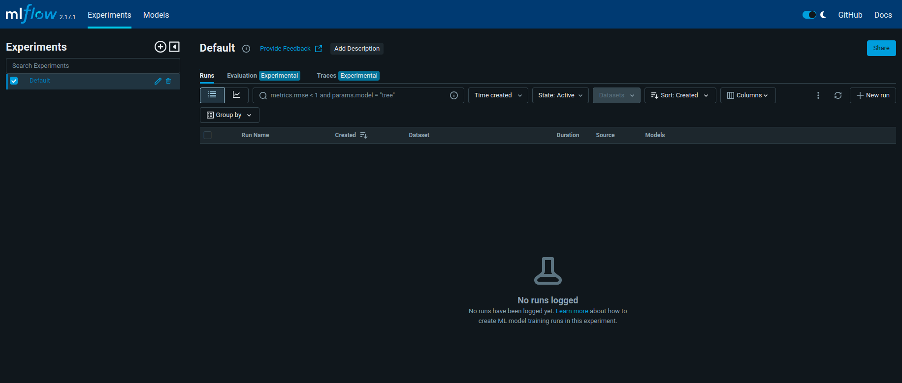
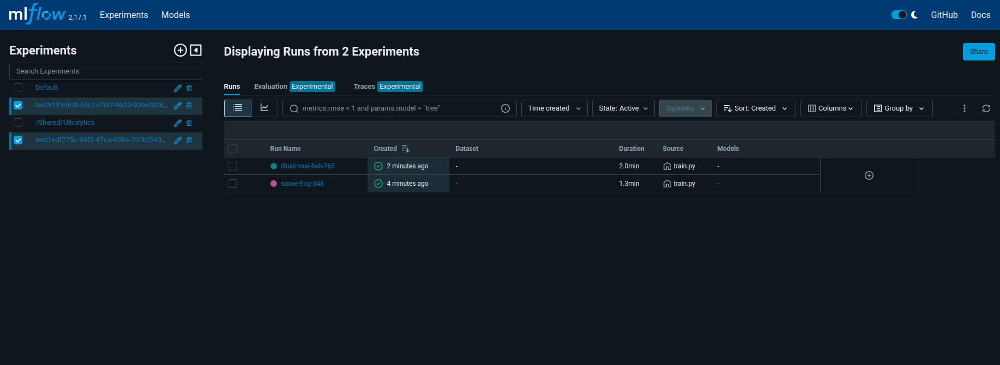
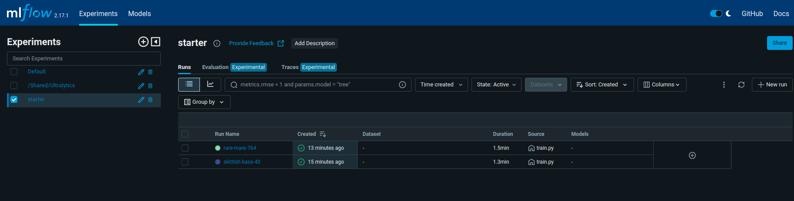

Steps for training
This is a step by step guide to train the model, see “steps for data versioning” before this one.
Unzip data using the command:
unzip data/data.zip
Inside the Ultralytics folder, change it so runs are saved in the models folder of this repository.
cd /home/user/.config/Ultralytics
sudo vim settings.json
Do the following changes in settings.json:
"datasets_dir": "/home/user/your_path/24-2-mlops-project-car_object_detection",
"weights_dir": "/home/user/your_path/24-2-mlops-project-car_object_detection/models/weights",
"runs_dir": "/home/user/your_path/24-2-mlops-project-car_object_detection/models/runs",
In the root folder of the repository, start Mlflow:
mlflow ui --backend-store-uri ./models/runs/mlflow

In another terminal, train model:
cd src/
python3 train.py
This command will train the model and also save the best.onnx from the trained model inside the model S3 bucket. It will erase the file best.onnx from the bucket if it already exists. If you would like to use another YOLO model, you can run the following command (in the root of the repo):
python3 data/s3_bucket.py --file_path /absolute_train_path/weights/best.onnx
Train again, changing hyperparameters if necessary.

All runs will be saved in the folder models/runs
